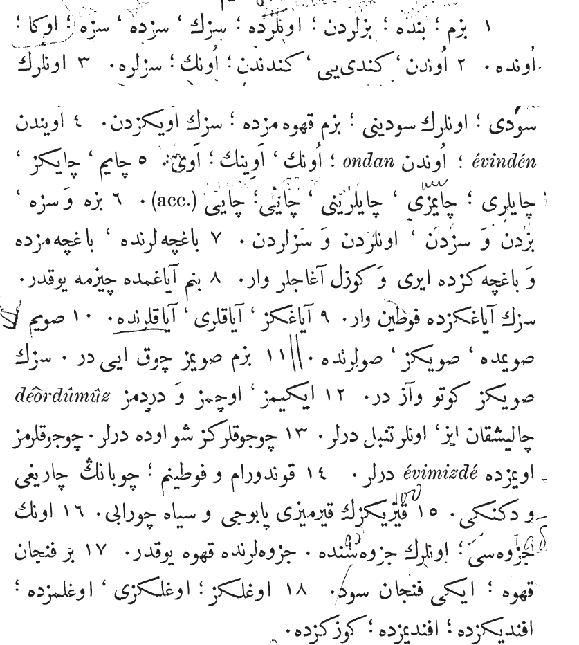

Important Note About The Exercises
You are under no obligation to complete these exercises. There are a lot of them and you may not need to do them all to get the point. Feel free to pick and choose whatever you'd like to do or not do.
Note: You must know the Lesson 5 Vocabulary from the vocabulary section to do these exercises. Also, some exercises, especially the dialogue, will still have new vocabulary!
Original Ottoman Text - Exercise
This is the original Ottoman text for the exercise above (Translate to English). Reading this provides "real" Ottoman reading practice.

Congratulations on reading your fifth Ottoman text!
Exercise: Translate into Ottoman
Type the Ottoman translation for each English phrase below.
Note: You must use a Persian or Ottoman keyboard to be able to do this exercise.
1. Our; with me, on me; from us; your, with you, on you; to you; to him; with him, on him.
Check
2. From him; himself etc.; from himself; his; to you.
Check
3. Their milk [nom.], their milk [acc.]; in our coffee; from your house.
Check
4. From his house; from him; (noun) his; (noun) of his house, (ev) his house [nom.].
Check
5. My tea, your tea, their tea; our tea [acc.]; their tea [acc.]; his tea, the tea.
Check
6. To us and to you, from us and from you, from them and from you.
Check
7. There are large and beautiful trees in their, [in] our and [in] your garden.
Check
8. I have no outdoor boots on my feet; you have boots on your feet.
Check
9. Your foot, their feet, on their feet.
Check
10. My water, in my water, your water, in their water.
Check
11. Our water is very good, yours is bad (filthy) and scanty.
Check
12. Both of us, three of us, and four of us are diligent, they are lazy.
Check
13. Your children are in that house. Our children are in our house.
Check
14. My shoes and boots; the shepherd's sandals and stick.
Check
15. Your daughter's red slipper and black stockings.
Check
16. His copy-book; in their copy-books. There is no coffee in their coffee-pot.
Check
17. A cup of coffee; two cups of milk.
Check
18. Your son; with (in) your son; with (in) our master; with (in) your master; in your eye.
Check